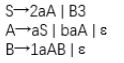
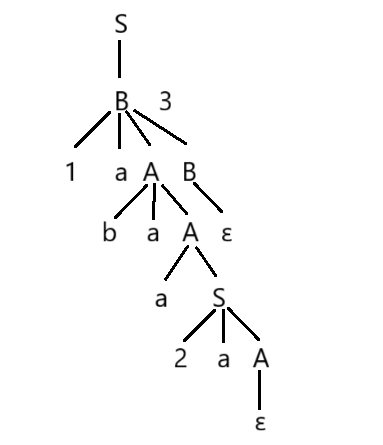

编译系统原理
一、编译器
1. 工作阶段
1.1 词法分析
作用：识别单词并找出语法错误，输出词法单元序列
命令：clang -E -Xclang -dump-tokens test.cpp
1.2 语法分析
构建语法树，形成层次关系
语法结构的基本定义：标识符是表达式、数是表达式
语法结构的递归定义：若expression1和expression2都是表达式，那么expression1+expression2和expression1*expression2都是表达式
1.3 语义分析
类型检查+转换
遇到错误——报告错误+继续编译
1.4 中间代码生成——虚拟机程序
特点：容易生成、容易翻译成目标程序
LLVM中间表示
内存中的编译中间语言（无法得到）
硬盘上存储的二进制中间语言（.bc后缀）
人类可读的代码（.ll后缀）
1.5 代码优化
生成运行速度更快的机器码
1.6 目标代码生成——汇编码
生成可重定位机器码/汇编码
确定变量内存位置
中间代码指令->机器指令
为变量指定寄存器
广义的“编译器”：浏览器、数据库查询
分析+综合
2. 语言处理系统
2.1 预处理器
- 宏的处理
C/C++：#define 宏名 宏值
将宏定义展开，并根据 #if、#ifdef 等决定包含哪些代码
- 包含头文件
将所有包含的头文件都展开并复制到当前位置，并通过添加行标记帮助编译器在错误报告中指出源代码有问题的位置
命令：clang -E test.cpp -o test.i(test.cpp是程序的名称，预处理后的文件后缀为.i)
2.2 汇编器
编译器->汇编代码，汇编器->可重定位机器码
两次扫描汇编：第一次识别标识符并存入符号表，指定内存地址（相对）；第二次将指令转换为二进制序列，标识符转换为内存地址，产生可重定位机器码
2.3 加载器和连接器
加载器将可重定位机器码的地址装载到指定位置，连接器将多个可重定位机器码文件组合成为单一程序
用nm查看二进制码中名字，objdump查看二进制码中的段，也可以进行反汇编操作
3. 编译器各阶段的组合
3.1 前端&后端
前端：主要依赖源语言，很大程度与目标机器无关
词法分析、语法分析、符号表创建、语义分析、中间代码生成、部分代码优化、错误处理
后端：只依赖目标机器、中间代码，不依赖源语言
代码优化、代码生成
分类：
- 单前端，多后端
- 多前端，单后端 .NET MSIL
- 多前端，多后端
3.2 扫描
多阶段合成一次扫描，读取一个输入文件，生成一个输出文件
词法分析、语法分析、语义分析、中间代码生成可合并
3.3 减少扫描次数
减少文件读写次数
中间文件保存在内存——可能会很复杂
某些阶段组合可能会产生问题
4. 编译器开发
基于某种特定的语言模式
自动生成编译器各部分源程序
二、文法分析
终结符：不能单独出现在推导式左边的符号，也就是说终结符不能再进行推导
非终结符：不是终结符的都是非终结符
起始符号：一般是第一个推导式左边的非终结符，通常为S
例如：在S→2aA∣B3这一推导式中，S是非终结符，因为它可以推导为后面的两种文法，2就是终结符，因为不能再进行推导。
构建语法树：根据符号串构建语法树，按照推导符号串的顺序逐步展开，最终构建。
例如，文法如下：

根据此文法推导符号串1abaa2a3的过程如下：
1 | S→B3 |
因此构建的语法树如下：
